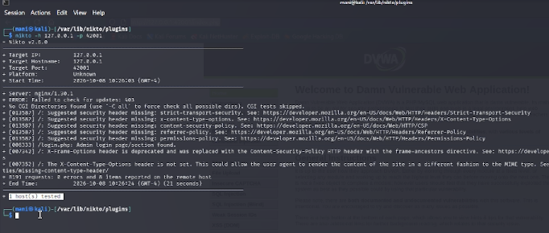

06.октябрь.2026
Освоить практические навыки работы со сканером безопасности веб-серверов Nikto и продемонстрировать его возможности по выявлению типовых проблем конфигурации на примере уязвимого приложения DVWA, развёрнутого в локальной среде Kali Linux.
Перед началом сканирования убеждаемся, что Nikto корректно установлен
в системе. Переходим в директорию плагинов
/var/lib/nikto/plugins и запускаем команду
nikto -Version. В выводе отображается версия Nikto
v2.6.0, что подтверждает готовность инструмента к работе.

Рис. 1 — Проверка версии Nikto
Выполняем сканирование локального веб-сервера DVWA с указанием порта
42001, на котором работает приложение:
nikto -h 127.0.0.1 -p 42001Nikto выводит информацию о целевом хосте: IP-адрес
127.0.0.1, порт 42001, версию серверного ПО
nginx/1.30.1. Начинается последовательная проверка сервера
по базе известных сигнатур.
Рис. 2 — Запуск сканирования Nikto
В процессе сканирования Nikto обнаружил 8 проблем на целевом сервере. Все они относятся к отсутствующим или устаревшим HTTP-заголовкам безопасности:
/login.php);
Рис. 3 — Список обнаруженных Nikto проблем
Для формирования итогового отчёта повторно запускаем сканирование с сохранением результатов в файл:
nikto -h 127.0.0.1 -p 42001 -o /home/mani/nikto_dvwa_report.html -Format htmПо завершении Nikto выводит итоговую статистику: 8191 запрос, 0 ошибок, 8 обнаруженных проблем, время сканирования — 23 секунды. Результаты сохранены в HTML-файл для дальнейшего анализа и подготовки отчёта.

Рис. 4 — Сохранение отчёта Nikto в HTML
Открываем сохранённый HTML-отчёт в браузере. В верхней части отображается сводка Host Summary и Scan Summary с ключевыми метриками: целевой хост, порт, версия сервера, количество запросов, найденных проблем и общее время сканирования. Здесь же указана полная команда запуска и версия используемого инструмента.

Рис. 5 — Сводка Host Summary и Scan Summary
В нижней части HTML-отчёта приводится детальное описание каждой
находки. Для каждой проблемы указываются URI, HTTP-метод, описание и
ссылка на официальную документацию Mozilla (MDN). Например, для
отсутствующего заголовка Strict-Transport-Security указана
ссылка на соответствующую статью MDN с объяснением назначения этого
заголовка.

Рис. 6 — Детализация находок в HTML-отчёте
В ходе индивидуального проекта № 4 был изучен и практически применён
сканер безопасности веб-серверов Nikto. С его помощью
выполнено сканирование уязвимого приложения DVWA, развёрнутого на порту
42001 локального сервера. Nikto выполнил 8191
HTTP-запрос за 23 секунды, не встретив ошибок,
и обнаружил 8 проблем, связанных с отсутствием или
устареванием HTTP-заголовков безопасности.
Были освоены ключевые параметры команды Nikto: -h для
указания хоста, -p для порта, -o для
сохранения отчёта и -Format htm для выбора формата.
Полученный HTML-отчёт содержит структурированную информацию: сводку
сканирования, статистику и детальное описание каждой находки со ссылками
на документацию.
Основной вывод работы: Nikto — эффективный инструмент для быстрой оценки конфигурации веб-сервера, однако он не заменяет специализированные сканеры уязвимостей приложений. Для комплексного аудита безопасности необходимо сочетать Nikto с инструментами динамического анализа (Burp Suite, OWASP ZAP) и ручным тестированием.